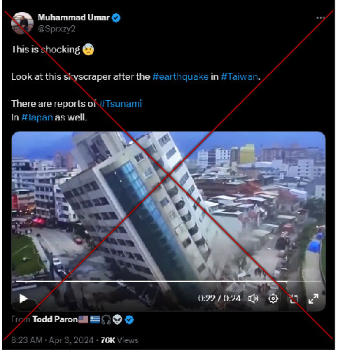
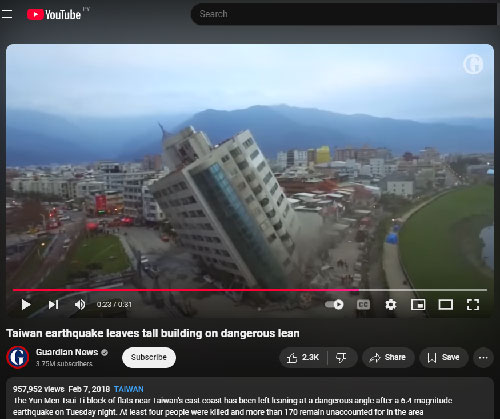

Fact Check | Old footage of leaning building falsely linked to April 2 Taiwan earthquake
Fact-check article date: April 4, 2024 | Updated: April 4, 2024Fact-check by ANDRE M. CHANG
Claim reviewed: "Footage of leaning building falsely linked to April 2, 2024 Taiwan earthquake"
Claim date: April 3, 2024

Rating: 1
False1="False", 2="Mostly false", 3="Half true", 4="Mostly true", 5="True"
Fact:
Screenshot taken on April 4, 2024, from Youtube
Published Date: Feb 7, 2018 TAIWAN | By Guardian News (The Guardian)
Video caption: "The Yun Men Tsui Ti block of flats near Taiwan's east coast has been left leaning at a dangerous angle after a 6.4-magnitude earthquake on Tuesday night."
Published Date: Feb 7, 2018 TAIWAN | By Guardian News (The Guardian)
Video caption: "The Yun Men Tsui Ti block of flats near Taiwan's east coast has been left leaning at a dangerous angle after a 6.4-magnitude earthquake on Tuesday night."
Reference:
"Taiwan earthquake leaves tall building on dangerous lean," www.youtube.com. https://www.youtube.com/watch?v=LDPpJ6F_R0c. (Accessed April 4, 2024).
"Taiwan earthquake leaves tall building on dangerous lean," www.youtube.com. https://www.youtube.com/watch?v=LDPpJ6F_R0c. (Accessed April 4, 2024).